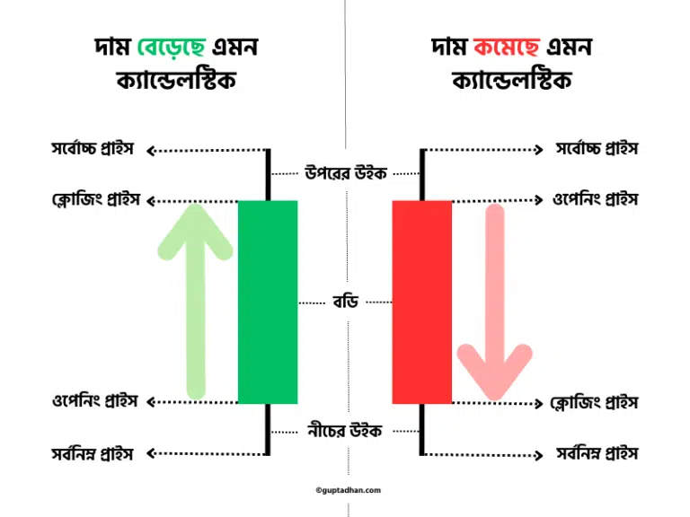

একটা ক্যান্ডেলস্টিক চার্ট অসংখ্য ক্যান্ডেলস্টিক নিয়ে তৈরি। যেকোনো টাইম ফ্রেমে শেয়ারের দামের চারটে লেভেল বা স্তর যথা শুরুর দাম (Opening Price), শেষের দাম (Closing Price), সর্বোচ্চ দাম (Highest Price) আর সর্বনিম্ন দাম (Lowest Price) এক একটা ক্যান্ডেলস্টিকের মাধ্যমে ফুটিয়ে তোলা হয়।

এই চারটি লেভেল ঠিকভাবে বোঝানোর জন্য প্রত্যেকটা ক্যান্ডেলস্টিকে দুটো অংশ থাকে। যথা,
মাঝের মোটা বডিঃ
এটাই সবথেকে গুরুত্বপূর্ণ অংশ। এটা নির্দিষ্ট টাইম ফ্রেমে ওপেনিং ও ক্লোজিং প্রাইসের দামের তফাৎটাকে নির্দেশ করে। দাম বেড়েছে এমন বা বুলিশ ক্যান্ডেলস্টিকে নীচের প্রান্ত ওপেনিং ও উপরের প্রান্ত ক্লোজিং আর দাম কমেছে এমন বা বিয়ারিশ ক্যান্ডেলস্টিকে এর বিপরীত হয়, মানে উপরের প্রান্ত ওপেনিং ও নীচের প্রান্ত ক্লোজিং প্রাইস নির্দেশ করে। বুলিশ ক্যান্ডেলস্টিকের বডির রঙ সাধারণত সবুজ (কখনও আবার কালো বা ভরাট) হয় আর বিয়ারিশ ক্যান্ডেলস্টিকের বডির রঙ সাধারণত লাল (কখনও আবার সাদা বা ফাঁকা) হয়।
শ্যাডো বা উইকঃ
বডির উপরে ও নীচে দুটো শ্যাডো বা উইক থাকে যার প্রান্ত দুটো একই টাইম ফ্রেমে যথাক্রমে সর্বোচ্চ ও সর্বনিম্ন দাম নির্দেশ করে। তবে দামের পরিবর্তনের ধরণ অনুযায়ী উইক দুটো সব সময় নাও থাকতে পারে।
উদাহরণঃ
নীচের ছবিটা আজকের তারিখে (25/10/24) 15 মিনিটের টাইম ফ্রেমে আদানি এন্টারপ্রাইজের দুটো থেকে তিনটে ত্রিশ পর্যন্ত ছটা ক্যান্ডেলস্টিকের ছবি।

এখানে প্রথম ক্যান্ডেলস্টিকের সময়কাল 2:00 থেকে 2:15। মানে এটা তৈরি হওয়া শুরু হয় 2:00:00 টো থেকে এবং উপর নীচে করতে করতে সম্পূর্ণ তৈরি হয় বা ক্লোজ হয় 2:14:59 তে। এর বডির রং সবুজ, তাই এর ওপেনিং প্রাইস নির্দেশ করছে এর বডির নিচের প্রান্ত, মানে 1837 টাকা এবং ক্লোজিং প্রাইস নির্দেশ করছে উপরের প্রান্ত, মানে 1860.10 টাকা। এর নিচের উইকের প্রান্তের লেভেল 1828 টাকা। মানে এই পনেরো মিনিটের মধ্যে দাম কখনো না কখনো সর্বনিম্ন এই দামে একবার হলেও নেমেছিল।
একইভাবে উপরের উইকের প্রান্তের লেভেল 1875 টাকা, যা বোঝায় এই সময়ের মধ্যে সর্বোচ্চ দাম কখনো না কখনো একবার হলেও 1875 টাকায় উঠেছিল।
এই ছবির প্রথম ক্যান্ডেলস্টিক 1860.10 -এ ক্লোজ হওয়ার পর 2:15 তে 1860.80 লেভেলে দ্বিতীয় ক্যান্ডেলস্টিক তৈরি হওয়া শুরু হয়। এটার রঙ লাল কারণ ক্লোজ হয় ওপেনিং প্রাইসের নিচে 1850.10 টাকায়।
এর আরো একটা বিশেষ বৈশিষ্ট্য হচ্ছে নিচে কোনো উইক নেই। কারণ এক্ষেত্রে ক্লোজিং প্রাইস এবং সর্বনিম্ন দাম বা লোয়েস্ট প্রাইস একই।
তৃতীয় ক্যান্ডেলস্টিকে আবার কোনরকম বডিরই অস্তিত্ব নেই। কারণ হচ্ছে এক্ষেত্রে ওপেনিং এবং ক্লোজিং প্রাইস একই।
ছবিটার বাকি বিবরণী মনে হয় আর দেওয়ার প্রয়োজন পড়বে না কারণ আশা করি সেটা এতক্ষণে পরিষ্কার হয়ে গেছে।